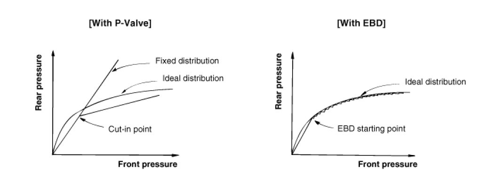

EBD (Electronic Brake Force Distribution)
Operation
The EBD system (Electronic Brake force Distribution) as a sub-system of the ABS system is to control the maximum braking effectiveness by the rear wheels.
It further utilizes the efficiency of highly developed ABS equipment by controlling the slip of the rear wheels in the partial braking range.
The brake force is moved even closer to the optimum and controlled electronically, thus dispensing with the need for the proportioning valve.
The proportioning valve, because of a mechanical device, has limitations to achieve an ideal brake force distribution to the rear wheels as well as to carry out the flexible brake force distribution proportioning to the vehicle load or weight increasing. And in the event of malfunctioning, driver cannot notice whether it fails or not.
EBD controlled by the ABS Control Module, calculates the slip ratio of each wheel at all times and controls the brake pressure of the rear wheels not to exceed that of the front wheels.
If the EBD fails, the EBD warning lamp (Parking brake lamp) lights up.
Advantages
- Function improvement of the base-brake system.
- Compensation for the different friction coefficients.
- Elimination of the proportioning valve.
- Failure recognition by the warning lamp.
Comparison between Proportioning Valve and EBD
